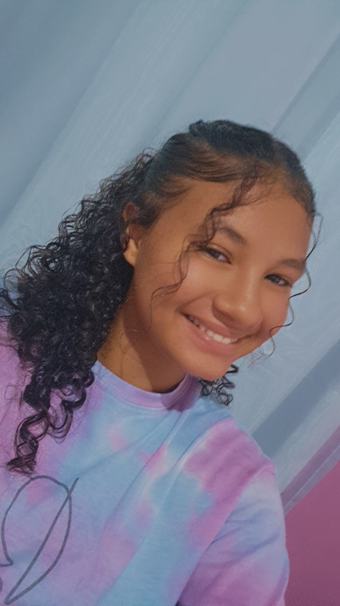

Maria Luiza Alves Interaminense
Cursando Desenvolvimento de
Sistemas no 1º ano do ensino médio

Informações Gerais
- Idade: 15 anos
- Data de nascimento: 10/09/2010
- Turma: 911C
Sobre mim
Atualmente cursando o 1º ano no curso técnico integrado ao ensino médio Desenvolvimento de Sistemas, no Instituto Federal de Alagoas (Ifal).
Tenho interesses em diversas áreas de conhecimento, mais especificamente da área de engenharia e matématica. Procuro obter boas relações com as pessoas ao meu redor e ser inclusiva, sempre procurando bom desempenho individual e coletivo.
Competências
- Noção básica de Inglês
- Cursando desenvolvimentos de sistemas: Linguagem de programação em JavaScript, HTML e CSS.
Projetos
Desenvolvendo um protótipo de site com conteúdo informativo, durante meu tempo livre, destinado a um grupo específico de pessoas (comunidade nerd).
Contatos